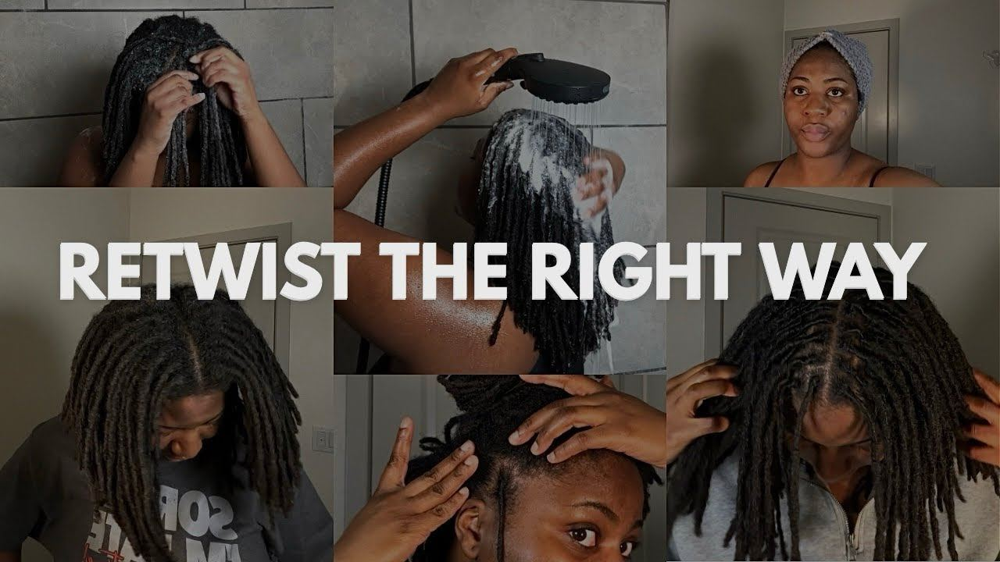

Retwist Day: The Complete At-Home Loc Routine, Wash to Finish
Retwist day is the main event of loc care — the day the roots get gathered, the parts get cleaned up, and the whole head resets. Done well at home, it saves money and builds real knowledge of your own hair. Done carelessly, it is where thinning roots and buildup begin. Esty Locs (@EstyLocs) walks the complete wash-and-retwist in the video below; this guide lays out the full day in order, with the discipline points that separate a healthy retwist from a damaging one.
The wash comes first — always
Never retwist dirty locs. Product and oil at the root get twisted in and sealed, becoming the buildup you fight for months. Wash thoroughly with a residue-free shampoo, working the scalp first and squeezing the wash through the lengths, then rinse until the water runs completely clear. Follow with a light conditioning rinse if your locs run dry — kept off the roots you are about to work.
Then dry properly before you start twisting. Retwisting soaking-wet locs traps moisture inside the loc for days. Towel-squeeze, then air-dry or sit under a dryer until the locs are damp at most. This patience at the front of the day is what keeps the finished retwist fresh instead of musty by Friday.
The retwist itself: technique and restraint
Work in sections, one loc at a time: a small amount of product at the root, twist in the direction your locs were started, then palm-roll the length to keep it smooth and cylindrical. Clips hold each finished loc out of the way. The direction is not a detail — twisting against your established direction unmakes the loc's structure while pretending to maintain it.
Restraint is the skill. The goal is neat roots, not strangled ones. A retwist pulled tight enough to hurt, bump, or show scalp tension is damaging the follicle it decorates. If your edges and temples ache the next day, the retwist was too tight — and repeated too-tight retwists are the number one cause of the thinning this routine exists to prevent.
Drying, the first night, and the calendar
Dry the finished retwist completely — under a hooded dryer or with a diffuser — before styling, sleeping, or covering. Damp roots under a cap overnight is the fastest route to mildew smell in locs. Once fully dry, the style can be worn down, up, or under your cap of choice.
That first night, protect with a satin-lined cap or a loose durag tied over the style — snug enough to stay, never tight enough to press the fresh roots flat in a new direction. Then put retwist day on a calendar rhythm, typically every four to eight weeks depending on your hair and growth. Locs reward a boring schedule: wash, retwist, dry, protect, repeat — for years.
Watch: Esty Locs runs the full at-home wash and retwist — the exact sequence this routine follows
Video: “At Home Loc Wash + Retwist Routine | In Depth Tutorial” by Esty Locs (@EstyLocs) · Watch on YouTube
Shop the gear
Everything in this guide runs on the right gear: a durag that holds compression without slipping, a cap that stays put, and fabric that treats your hair right. The durag.store launch lineup is built to that standard — dual-layer construction, long tails, and stitching made to survive the routine. Join the launch list and use code GOLDSTANDARD for 15% off your first order.
Keep learning
- Double Durags for Long Locs: Containing Length Without Crushing It — Intermediate · Locs & Dreadlock Care
- Dreadlock Caps: The Complete Guide to Sleeping and Living in Locs — Intermediate · Locs & Dreadlock Care
- Sleeping With Starter Locs: Protecting Baby Locs Through the Fragile Months — Basic · Locs & Dreadlock Care
Sources: Video — “At Home Loc Wash + Retwist Routine | In Depth Tutorial” by Esty Locs (@EstyLocs), youtube.com. Guide written by the durag.store Wave Lab.